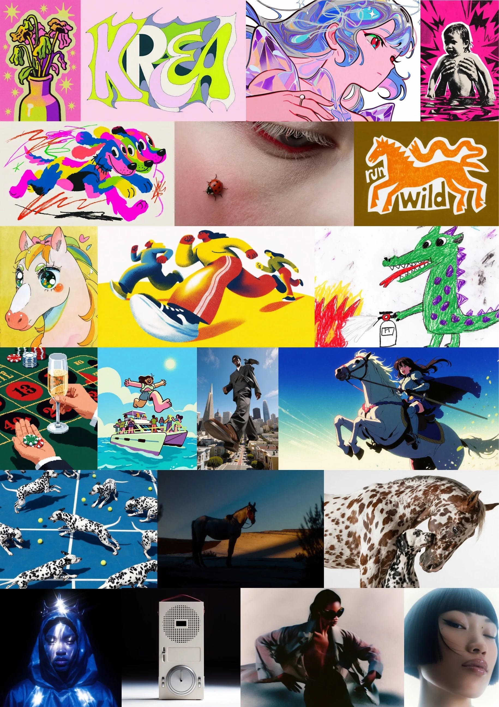
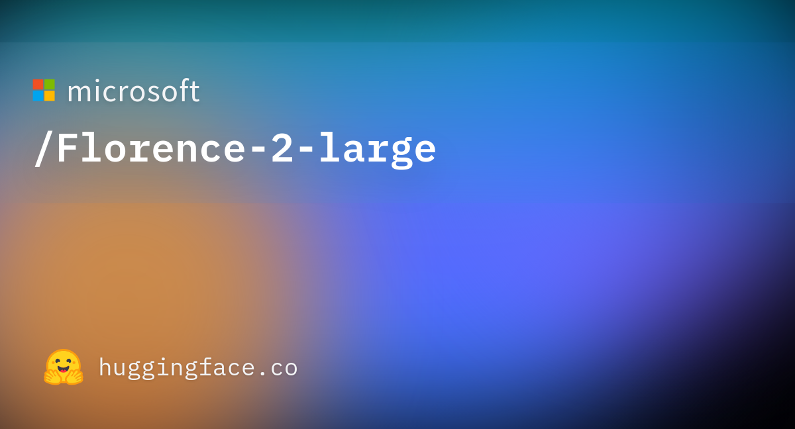
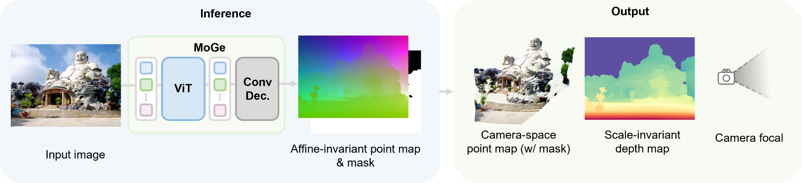
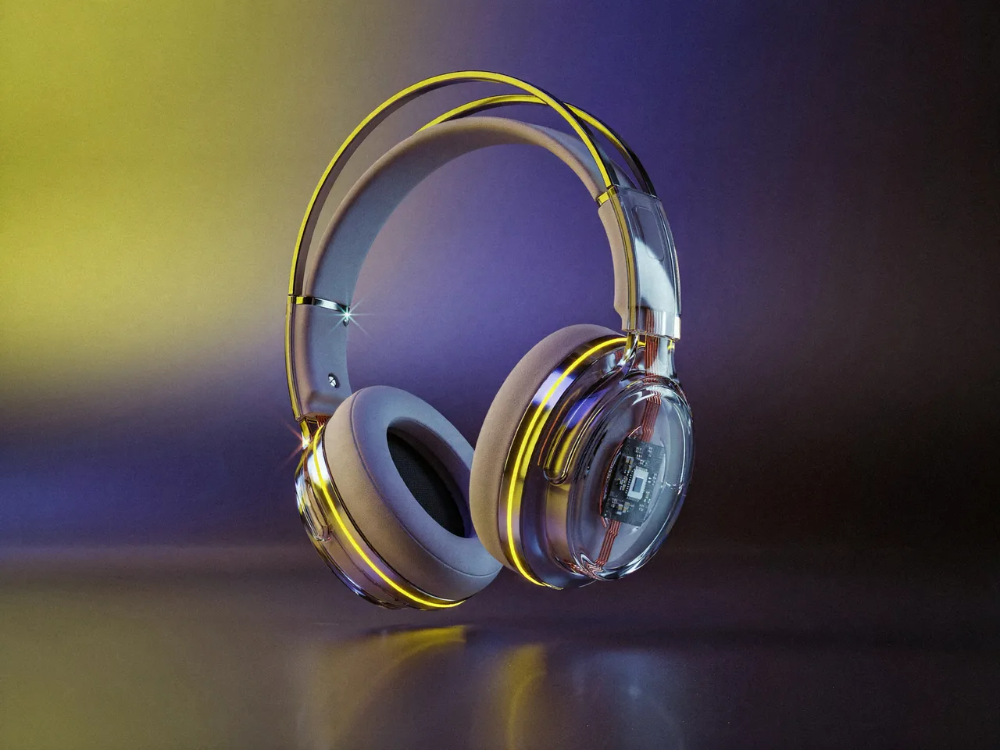
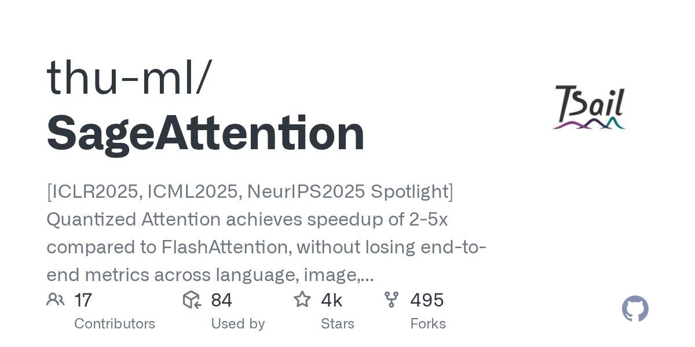
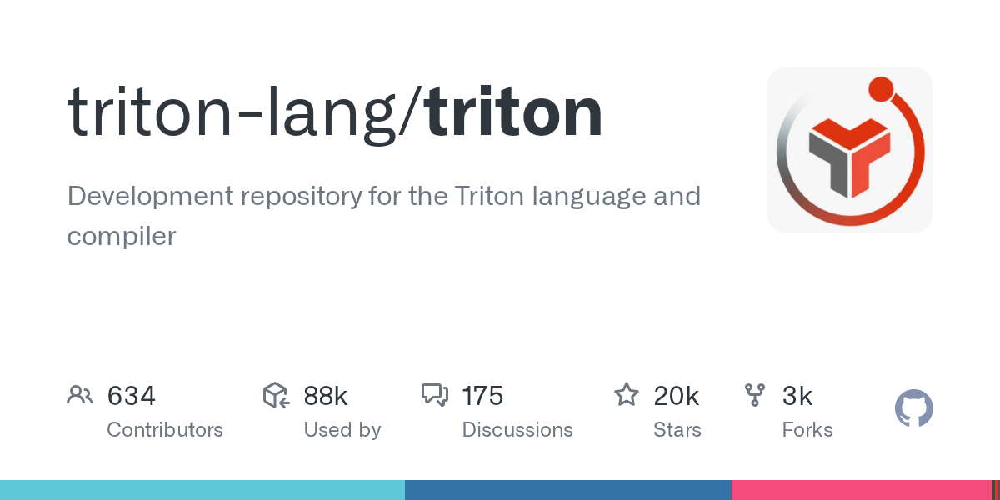

Phase 0 · Unlocks Phase 1 pano
Native Windows window named Votion 3DGS: model status, Hugging Face downloader, cancelable subprocess jobs. No diffusion, no browser, no WSL.
Independent venv: Python 3.12 + CUDA 12.8 + PyTorch cu128.
Do not reuse ComfyUI python_embeded (3.13 + torch 2.13.0+cu130).
Weights lookup: D:\ComfyUI_windows_portable_360\ComfyUI\models first (inventory 2026-08-31: no required .safetensors).
Hub cache is <install_root>\.hf_cache\ (the folder the user will select in Inno Setup; P0/dev root is D:\Votion3DGS).
Ready files go to <install_root>\models\. Do not write Hub cache to C:\Users\<user>\.cache\huggingface.
GPU default: RTX 3090, index 0. Visual tokens from V1 ui/theme.css — do not invent a palette.
P0 ships six named pages. Only Home is functional. Chrome below copies V1’s Engineering Blueprint: brand bar, stage chips, left rail, viewport, Log drawer, Help drawer. Page names are the P0 list. Fast / Scout stay disabled until Phase 4. Panorama Generate stays disabled until P1.
Florence-2 only if captioning is enabled. MoGe is a P2 subset — not this default. Hub cache sits in the install folder (.hf_cache), not C:\Users\…\.cache.
Model status
Status machine: MISSING_* | READY. Subset READY is OK in P0.
.hf_cache, ready files in models.
Dummy only — not a screenshot of a running app. Stage chips are the six P0 pages. Left/right split copies V1 yv-rail / yv-viewport. Log and Help are bottom drawers.
D:\Votion3DGS\. Do not put V2 inside Yik Votion WorldFM.py -3.12 -m venv .venv then official cu128 torch from pytorch.org. If 3.12 is missing, stop.torch.cuda.is_available() on the 3090, then try gsplat including DefaultStrategy (Splat3) and MCMCStrategy (MCMC). Record pass/fail in env_report.txt. Do not claim gsplat in the UI until it passes.py -3.12 -m venv D:\Votion3DGS\.venv .venv\Scripts\activate python -m pip install --upgrade pip # PyTorch: official cu128 command from pytorch.org at install time # Then: PySide6, huggingface_hub, tqdm python tools\env_report.py
models\<folder>\<file><install_root>\models\<install_root>\.hf_cache then hardlink/copy to models\MISSING_<id> + Index URLDefault download set: P1 subset (Krea 2 + LoRAs + VAE + CLIP + RealESRGAN; Florence-2 if captioning is enabled). Optional “All” so WAN 14B is not forced before Phase 3. Hub cache never uses C:\Users\<user>\.cache\huggingface.




models\. The product itself is PySide6, not Comfy.
Source: comfy.org
D:\Votion3DGS\ app\main.py app\windows\main_window.py app\theme.qss engine\job.py engine\workers\dummy.py tools\download_models.py tools\model_manifest.json tools\env_report.py tools\launch.bat
tools\launch.bat opens a desktop window titled Votion 3DGS (not a browser).env_report.txt shows Python 3.12, CUDA 12.8 torch, cuda.is_available() True.models\ or a clear missing-URL error. MoGe may still be missing.<install_root>\.hf_cache\ (P0: D:\Votion3DGS\.hf_cache), not C:\Users\<user>\.cache\huggingface.| Risk | Mitigation |
|---|---|
| gsplat vs 3.12/cu128 unknown | Spike 0.3; Brush fallback in P2 |
| Python 3.12 not installed | Stop before venv |
| Driver too old for CUDA 12.8 | nvidia-smi in env_report |
| Disk | Check free space before WAN 14B |
Do not wrap Gradio, call WorldFM, vendor full SplatKit until P2, or pin a fictional torch version.

